Using the SignalObj Class
In this file we will give several examples of how the SignalObj can be used. A description of all of the properties of SignalObj can be found at: SignalObj Class Definition
Contents
Example 1: Defining and Plotting Signals
Define a two dimensional SignalObj,  , representing two voltage signals that were 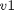 and 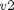 aquired simultaneously at 100Hz. Another SignalObj,
, representing two voltage signals that were 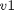 and 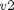 aquired simultaneously at 100Hz. Another SignalObj,  , is created from just . Both signals are plotted.
, is created from just . Both signals are plotted.
close all; sampleRate=100; t=0:1/sampleRate:10; freq=2; v1=sin(2*pi*freq*t); v2=sin(v1.^2); v=[v1;v2]; s=SignalObj(t,v,'Voltage','time','s','V',{'v1','v2'}); s1=SignalObj(t,v1,'Voltage','time','s','V',{'v1'}); subplot(2,1,1); s.plot; subplot(2,1,2); s1.plot;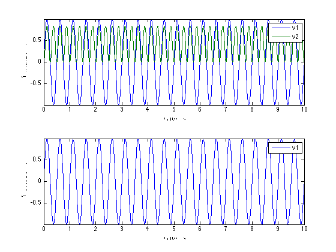
Note how the legend show the appropriate labels. If the dataLabels had not been set, the legend would not appear.
Instead of defining a new SignalObj, , the data in can be masked away and then the plot will only show the data of interest. It is important to note that setMask is used to set which signals should remain visible. Also note that when a data is masked, converting the SignalObj to a Matrix only returns the visible data. A new SignalObj can be created from the orignal SignalObj which only contains the data of interest. Lastly, the all labeled components can be accessed independently via the vars subfield.
subplot(2,1,1); s.setMask({'v1'}); s.plot; s.resetMask;
subplot(2,1,2); s.setMask({'v2'}); s.plot; size(s.dataToMatrix)
s.resetMask;
ans =
1001 1
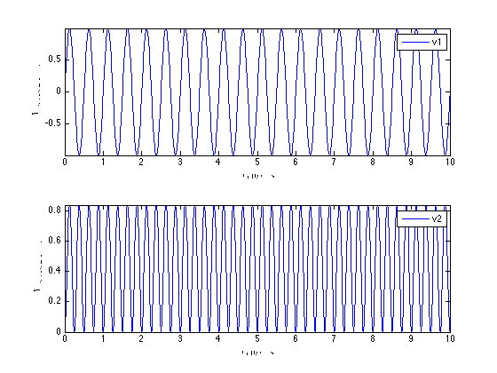 Note about repeated dataLabels It is possible to use SignalObj's to store different realizations of the same physical signal. For example, independent measurements of at two distinct experiments.
s=SignalObj(t,[v1; v1; v2] ,'Voltage','time','s','V',{'v1','v1','v2'}); s.getSubSignal({'v1'}); %returns a SignalObj with both realizations of v1 figure s.getSubSignal({'v1'}).plot;

Example 2: Changing Signal Properties
figure s=SignalObj(t,v,'Voltage','time','s','V',{'v1','v2'}); subplot(2,1,1); s.plot; subplot(2,1,2); s.setXlabel('distance'); s.setXUnits('cm'); s.plot;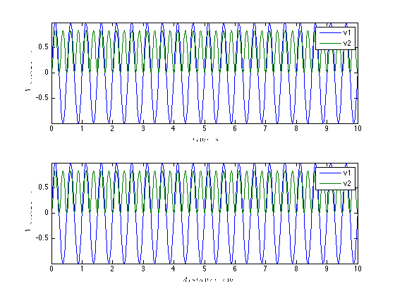
figure
subplot(2,1,1); s.setDataLabels({'r1','r2'}); s.setYLabel('Temperature'); s.setYUnits('C'); s.plot;
subplot(2,1,2); s.setMaxTime(14); s.setMinTime(-2); s.plot;
s.setName('testName'); %should work since we are using a method
if(strcmp(s.name,'testName'))
fprintf('Name successfully set \n');
else
fprintf('Could not set name \n');
end
% s.name = 'testName'; %returns an error because the field is private;
Name successfully set

setMaxTime and setMinTime can be given a second parameter, holdVals, that determines whether the endpoint values are kept or set to zero if the times being set are outside the original window of the data.
Plotting properties for individual components of the data can be set via the when plotting or by call the setPlotProps method.
figure s=SignalObj(t,v,'Voltage','time','s','V',{'v1','v2'}); subplot(2,1,1); s.plot('v1',{{' ''k'' '}}); subplot(2,1,2); s.plot('all',{{' ''k'' '},{' ''-.g'' '}});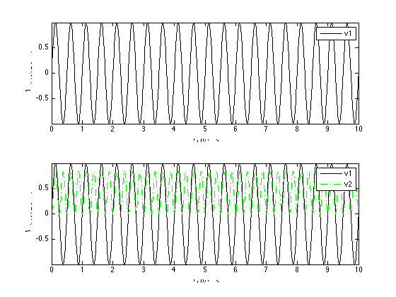
figure
subplot(2,1,1); s.plot({'v1','v2'});
subplot(2,1,2); s.plot({'v1','v2'},{{' ''k'' '},{' ''-.g'' '}});

Example 3: Resampling and Windowing SignalObjs
figure s=SignalObj(t,v,'Voltage','time','s','V',{'v1','v2'}); s1=s.resample(.1*sampleRate); subplot(2,1,1); s.plot; subplot(2,1,2); s1.plot;

figure subplot(2,1,1); s.getSigInTimeWindow(-2,3).plot; subplot(2,1,2); s.plot;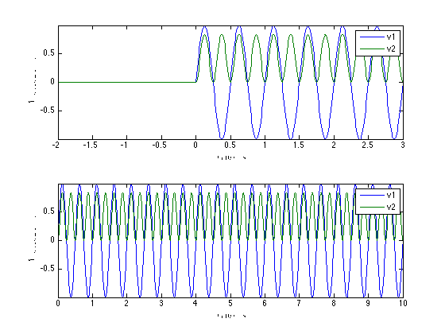
Example 4: SignalObj Mathematical Operations
s=SignalObj(t,v,'Voltage','time','s','V',{'v1','v2'}); figure s2=mean(s); %mean of each dimension; s5=s-s2; %zero mean version of s; s5.plot; figure s2=mean(s,2); %mean of s across its dimensions; s2.plot;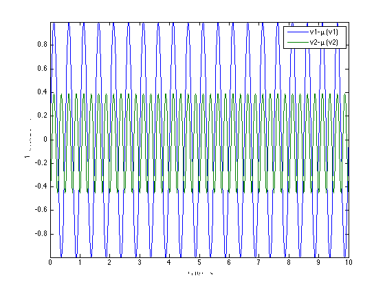 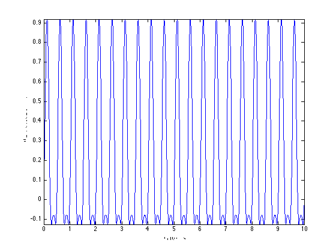
SignalObj's can be added, subtracted, and multiplied.\
figure
s4=2*s+s5;
s4.plot;
figure
subplot(3,1,1);
s.integral.plot;
subplot(3,1,2);
s.derivative.plot;
subplot(3,1,3);
s6=s.integral.derivative-s; %should equal zero;
s6.plot;


Example 5: Spectra
s=SignalObj(t,v,'Voltage','time','s','V',{'v1','v2'}); figure; s.MTMspectrum; figure s.periodogram;
 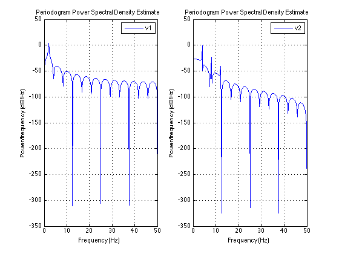
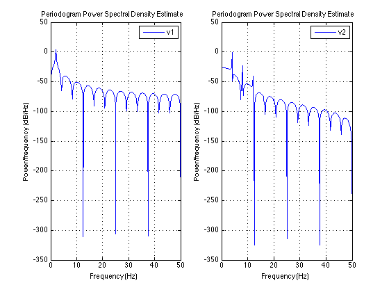 Example 6: View signal variability
We can look at the variability of signals with regards to their labels or or irrespective of their labels. Lets create a SignalObj that has several components, and some noise. We mislabel two signals to add alot of variability for illustration
sampleRate=5000; t=0:1/sampleRate:1; t=t'; freq=2; v1=sin(2*pi*freq*t); v2=sin(v1.^2); noise=.1*randn(length(t),6); %gaussian random noise data= [v1 v2 v2 v1 v2 v1] + noise; s=SignalObj(t,data,'Voltage','time','s','V',{'v1','v2','v2','v1','v1','v2'}); figure; subplot(2,1,1); s.plot; subplot(2,1,2); s.plotAllVariability; %disregards labels; s.plotVariability; %creates two figures, one for 'v1' and one for 'v2'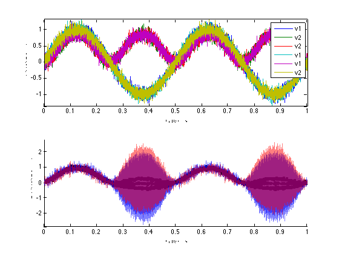
sObj.plotAllVariability assumes that all the data can be considered together. It also allows more custimization of the plotting properties. Example we can specify a different faceColor by passing the color in the same format as plot. Assymetric confidence intervals can be specified. If the CIs are single numbers, they specify the multiple of the standard deviations to use (default is 1). If they are the same length as the SignalObj, then it specifies the actual values above and/or below the mean at each point in time. If ciLower is not specifed, it is assumed to equal ciUpper. For convinience the inputs to plotAllVariability are: s.plotAllVariability(sObj,faceColor,linewidth,ciUpper,ciLower)
figure; %blue color for CI patch; subplot(3,1,1); s.plotAllVariability('b'); %green color and lineWidth=2; subplot(3,1,2); s.plotAllVariability('g',2); %cyan, lineWidth=3, 2*std for top CI, and 1*std for bottom CI subplot(3,1,3); s.plotAllVariability('c',3,2,1);